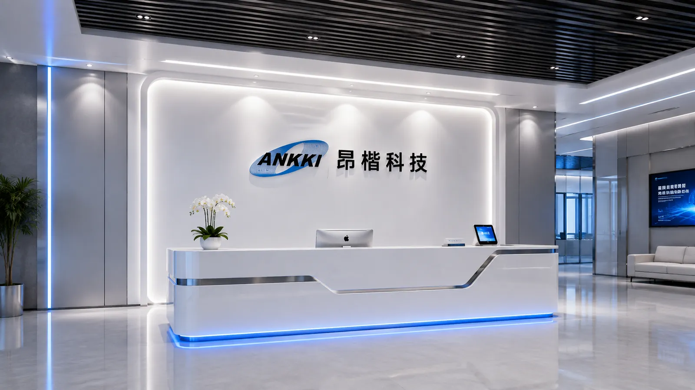
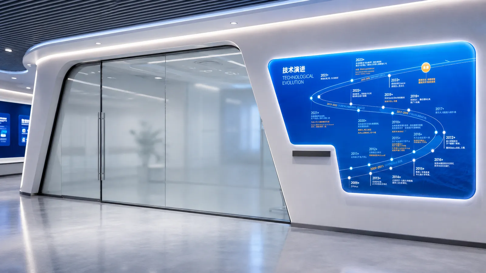
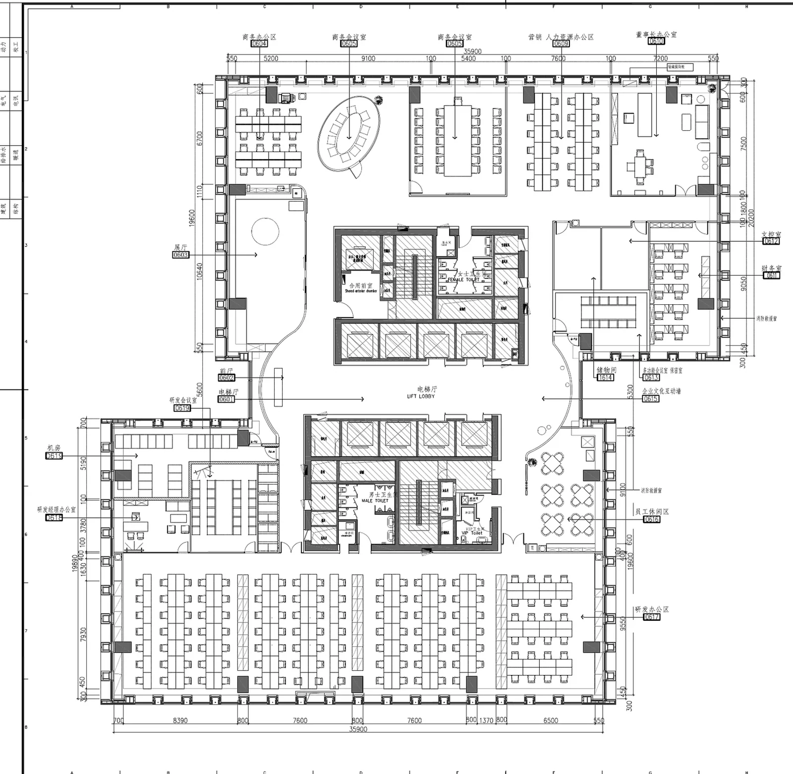
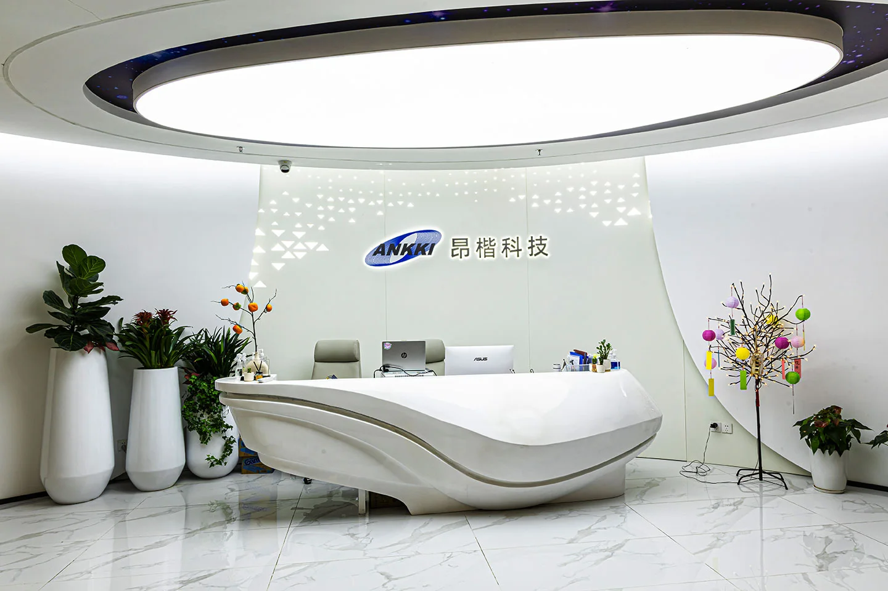

三十多个区域逐一规划
每个区域写清责任部门、位置、成品尺寸、内容板块和字数要求，做成一份所有人都看得懂的清单。
Case 03 · Spatial narrative · 2022—2023
访客只有十分钟。我先决定他们每走一步应该记住什么，再把三十多面墙编辑成一条从“看见”到“信任”的空间叙事。


左右拖动 · 360° 循环环视

参考原始施工平面与项目期间的点位草图重建。
这个项目的设计对象，从来不是一面墙。
01 — 项目概览
我先写下参观者每走一步应该获得的信息：前台建立第一印象，展厅集中回答“业务与信任”，弧形走廊再把历程、客户与组织文化展开。墙面的造型和文字，都必须服从这条信息次序。
层办公空间 · 五楼与六楼
区域与墙面
协作部门
项目总预算 · 含税
每个区域写清责任部门、位置、成品尺寸、内容板块和字数要求，做成一份所有人都看得懂的清单。
技服部写会议标准、研发部写 IPD 流程、人资部写企业理念。会后发清单和纪要，把口头承诺变成白纸黑字。
评估供应商资质、比稿、比价，重点区域升级工艺，次要区域该砍就砍，把钱花在访客真正会看的地方。
每个区域明确责任人和安装时间，现场解决墙面、高度、尺寸这些图纸上看不出来的问题，直到收尾。
02 — 执行流程
从需求调研到现场验收，我要让内容、动线、材质、报价和施工在同一条时间线上不断链。设计师在这里不只产出画面，也负责让每一个判断最终能被做出来。
03 — 内容统筹
我把每个点位的位置、视距、停留时间和责任部门先写进同一张表。一面墙能放多少字，应该用图还是用屏，不在排版时凭感觉决定，而是由人在空间里如何接近它来决定。
一面墙一行，不留模糊地带。表格发出去，部门就知道自己欠什么、什么时候交。
每块内容 40–80 字、每句 6–12 字。尺度决定信息量，不能等排版时才发现放不下。
访客从电梯厅进来，先建立第一印象，再进展厅集中理解公司，出来沿弧墙看见历程与客户。
04 — 展厅设计
你们做什么？凭什么可信？能力覆盖到哪里？技术将走向哪里？我没有让四面墙争着说话：主展墙建立业务与信任，两侧屏幕承载会持续变化的内容，出门前的长灯箱再用一条技术时间线收束参观。
这一组是提案阶段的效果图，用来跟领导和供应商确认造型、材质与灯光。下面是同一批墙装完之后的现场照。
落地实景2023 年 2 月起分区安装，同年 7 月收尾
05 — 动线与公共区
电梯厅出来是前台，右转进展厅；出了展厅沿走廊一路走下去，发展规划与服务网络、政府来访照片墙、弧形的企业文化墙与客户 LOGO、发展历程、荣誉资质墙依次出现，最后绕回前台。这些墙面同属一套视觉语言，各自承担不同的信息。鼠标移到右边任意一站，平面图上会亮出它的位置。点右边任意一站，平面图上会亮出它的位置。
整条动线的起点，也是唯一一处不在展厅里的重点墙面。四米出头的一面弧墙，只放一组标识——4050 × 2850 的墙上，标识组合占 1880 宽、居中，下沿离地 1900——比 1600 的站立视平线高出一头，进门抬眼正对。上方那片三角形穿孔从密到疏往下散开，背后打光，把大面积的白墙从「空」变成「有质感的空」。

拖动可环视
动线到这里不再有房间的边界，墙面就是全部。三面墙分别承担三件事：企业文化与客户名录放在整层唯一一道弧墙上，发展历程用一条上扬曲线拉开时间，服务网络用一张立体地图交代覆盖范围。同一套白色造型板加蓝色灯线的语言，从展厅一直延续到这里。
落地实景前台与走廊各面墙的现场照，含施工定位图
这一节的现场照都是竣工后拍的。企业战略屋在最终版布局里没有单独成墙，内容并入了弧墙那一段。
06 — 部门墙面
前台和展厅是给外人看的，办公区和技术区的墙是给自己人看的。这两类墙的规则不一样：展厅要克制、要留白，部门墙要具体——写清楚这个部门做什么、怎么做、做到哪一步了。所以从六楼办公区到五楼技术区，我给部门墙另立了一套做法：主色可以离开企业蓝，内容密度可以更高，但造型语言必须还认得出是同一家公司。
五楼是技术服务部门和数据安全实训区，来的人不是客户就是学员，墙面要承担真的讲解功能——不是氛围，是教具。
这一节全部是效果图。部门墙的施工在展厅之后分批推进，用途是各部门确认内容与版式，也是后来其他部门提需求时的参照样板。
07 — 荣誉分层
公司这些年攒下的资质、奖项和牌匾足够铺满一整面墙。我按含金量把它们分层，也因此拆成了两面墙：最重量级的放进展厅、用重点照明单独呈现；其余的集中到市场部的第二面荣誉墙。
国家专精特新「小巨人」、DAMA 数据治理相关奖项、Gartner 技术成熟度曲线收录——分量最重的几张放进展厅，单独打光、周围留白。专业客户会停下来看的就是这几张，多挂一张都是干扰。
数据安全行业的权威认证、第三方评测入选与产品类奖项。单看每一张分量有限，成组陈列才说得清「在这个领域被同行和第三方持续认可」。
软著与荣誉牌匾不需要逐张阅读，用展柜规整陈列，把「积累了很多年」一眼交代完。
08 — 成本控制
成本控制不是把每个点位一起做便宜，而是先承认视线有优先级。我取消四处几乎没有停留的墙面，把省下的金额转给前台、展厅与走廊尽头：这些地方每一次参观都会被看见。
原合同制作报价 · 不含税
逐项变更后应付
两轮谈判后确认的增项
取消低价值点位省下的钱
展厅那 30,000 元是这场谈判里我最在意的一项：总价一分没涨，工艺却从喷绘贴换成了蓝色烤漆背光字、PVC 线条、亚克力盒子和灯箱。变更后供应商的应付比原合同多出两万多，最终以 15,000 元确认；加上后续零星新增，2023 年 7 月用一份补充协议 2.15 万元一次性结清。
09 — 总结与收获
没有内容层级，再精致的墙面也只是把信息堆高。参观顺序和文案脚本必须排在形式之前，这个次序一旦颠倒，后面每一步都要返工。
每个部门都觉得自己的墙最重要。最花精力的不是设计，是把这些诉求拉到一张清单上对齐——先做需求表、再逐个部门确认，比开大会扯皮高效得多。
领导很看重文化墙，但没有时间陪我从头推导。后来每次汇报我都把效果图、材质和价格区间放在一起，让判断压缩成几个能当场拍板的选项。
砍掉走廊、商务会议室、文控室这些访客根本不会停留的点位，把省下的钱压到形象墙和展厅。同一笔钱，被看见的次数差了几十倍。
墙面不平、高度对不上、消防设施挡住版面。提前去现场量、去盯，比装完再返工便宜得多——这是这个项目里最贵的一课。
Maridian 作为项目负责人，统筹了昂楷科技深圳前海总部五、六两层的文化墙与展厅项目，覆盖三十多个展示区域、十余个协作部门，项目总预算约 29 万元。
项目不从墙面造型开始，而是先完成内容清单、字数规格与参观动线：访客从前台进入展厅集中理解公司，沿弧形文化墙看见发展历程与典型客户，最后回到办公区。展厅作为核心，用四面墙分担产品演示、荣誉资质、解决方案、实体陈列与技术演进；客户案例则整块前移到前台正对大门的弧墙上，进门第一眼就看得见。
他同时负责供应商筛选比价、图纸深化、材料与工艺取舍、预算变更汇报、施工排期与现场验收。制作部分逐项做出前后对照表，主动取消四处低价值点位，把预算集中到形象墙与展厅，并通过两轮谈判把变更增项从两万余元压到 1.5 万元。
项目从 2022 年 6 月签约推进到 2023 年 7 月结算，最终以一份补充协议完成全部增项结清。
问问 AI 关于 Maridian